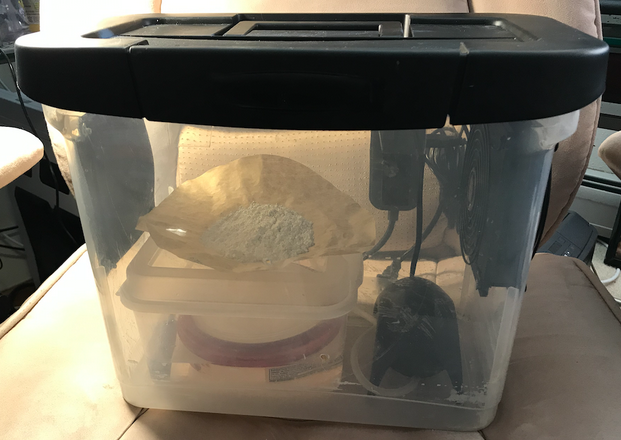

Welcome to Cyan
Table of contents
Welcome to the documentation for the Cyan Decarbonizer, version 1.
A DIY small-scale open hardware direct air carbon capture (DACC) system.
|  |
|---|
| The outer box and fan are optional for experimentation. The humidification chamber and air pump are the minimum required items. |
Purpose
This portable system operates at a small enough scale to empower individuals to tangibly experience carbon removal. It is also designed to get people actively thinking and sharing their carbon footprint and their role in the carbon cycle.
You can take a 5-minute tour of a Cyan system and learn more about the details of the project here:

If you have twenty-something minutes, details about the device design, current challenges, opportunities and big questions, and the Cyan mission’s general goals and aspirations are available here:

Vision
Cyan is named in honor of cyanobacteria. As cyanobacteria did with oxygen, the vision was that many of these small-scale DACC units might come to have a significant impact on atmospheric $CO_2$ and thus climate change. If not directly due to their small size, then indirectly through the promotion of DACC as a technology and through the educational experience of using Cyan.
The educational experience might be the biggest way that Cyan units will combat climate change. One can quickly see what $CO_2$ emissions look like in trapped form, how much it weighs, and how long it takes to capture it. DACC starts to become a conversation point among friends and family. People start wanting to run Cyans to erase the emissions from their light bulbs, for example. And if they can neutralize those emissions, what’s next? Household emissions? Should I buy a bigger DACC unit to cover my home’s emissions? And so on.
The Documentation, Q&A, Wiki, and Project Updates
The Cyan Assembly Instructions will get you started with an overview of how it works, a parts list, and instructions for putting it together. All this information can be found on this website.
We now have a Cyan Q&A that goes over some common general and technical questions.
The Supporting System Calculations describe the logic that went into designing the system, from a LCA/TEA perspective.
The $CO_2$ Capture Measurements describe results obtained so far on how well this system can perform.
To report your modifications, experimental results, and feedback for making Cyan better, please visit the Cyan DataShare site.
To see an overview of where we are with current progress, please view the Projects board.
Lastly, to view Cyan Project Progress updates on the OpenAir Forum, those are available here.
Carbon Capture Details

Inputs and Outputs
The input material, calcium hydroxide, can be found in any home improvement store as hydrated lime. However, for Cyan to be carbon-negative the input must either be sourced from a low-carbon supplier or obtained from waste cement.
The output material, calcium carbonate can be used in building materials (cement-lime) or as agricultural lime.
Magnesium hydroxide is also an option for use as the input material. Though perhaps more expensive depending on the source, it is less alkaline than calcium hydroxide and has performed as well to slightly better than calcium hydroxide in carbon capture effectiveness in our Cyan tests. It can also be used to make tiles or blocks when mixed with cement and optionally biochar. We hope to have a low-carbon supplier later this year.
Emissions Reduction
At present, a Cyan will remove over the course of 24 hours the same amount of $CO_2$ emitted by running a 9-watt LED bulb for 3 hours. That is 2 grams of $CO_2$ for 10grams of input material - or a 0.2:1 ratio.
It is within theoretical possibility for this unit to remove the emissions of 20 9-watt LED bulbs for 3 hours (a whole house at night), that is 0.382 kg of $CO_2$ that would need to be captured. Adequate surface area needs to be provided within the unit to do this and we are presently working on that.
Achieving Negative Emissions
The calcium hydroxide needs to be exposed to high humidity from between 3 to 16 hours to achieve a good level of carbonation. Keeping the electricity consumption low will ensure Cyan removes more $CO_2$ than it emits through electricity use.
Cyan uses 1.5 watts of electricity to power the air pump which bubbles air through water and humidifies the calcium hydroxide, allowing $CO_2$ to be absorbed. However, the air pump does not need to be run continuously to maintain adequate humidification. A duty cycle of, say, 10 minutes on & 50 minutes off is possible and suggested for negative emissions (more $CO_2$ removed than consumed by the air pump).
The fan uses 3 watts but only needs to be run intermittently to refresh the air inside the box. The fan is also useful to speed up dry time but this is not essential for operation. If you’re going for negative emissions, air drying would really help unless you are using renewable energy to power your unit.
Licenses

All hardware materials and designs provided here are licensed under the CERN-OHL-P hardware license. All software is under the GNU General Public License v3.0 (GPL-3.0). All documentation, including the Wiki, is under the Creative Commons CC-BY-SA-4.0 license.